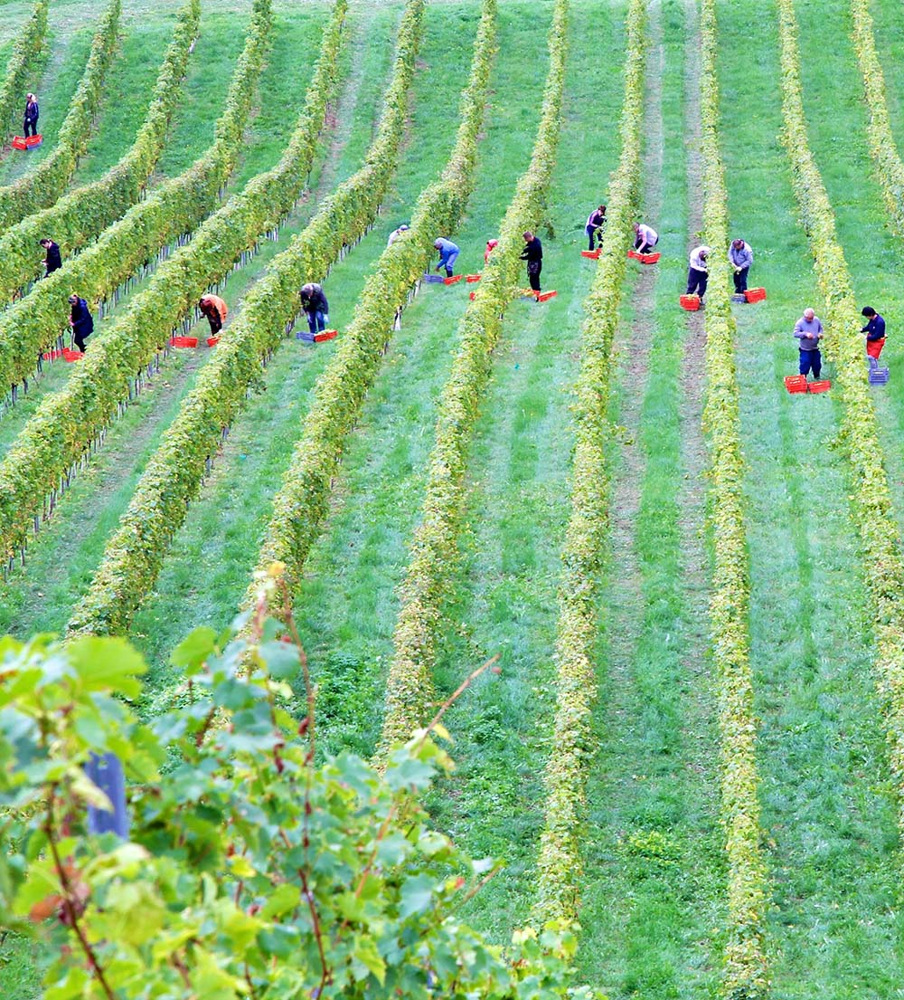

Data Interactives
Immigration in America, explained through data visualization
America's Agricultural Workers and Immigration: A Changing Landscape
Date: October 14, 2021
Farm workers are essential to America’s critical food infrastructure. Despite abundant and fertile land, our food supply of fresh fruit and vegetables relies increasingly on imported produce as labor shortages in the crop production industry persist. To shed more light on this worrying trend, we analyzed data from the United States Department of Agriculture and American Community Survey on the U.S.’ fruit and vegetable supply, on the workers who harvest these crops, and the trends affecting America’s agriculture industry over the past decade. We find that immigrants play a crucial role in our nation’s food supply chain, and they will continue to do so as essential workers harvesting America’s fruits and vegetables.
Generally, the overall availability and market for fruits and vegetables has increased for the past three decades. Most of this increase is due to population growth and increased consumer demand for fresh produce. In fact, over the past two decades, rather than increasing the home grown supply of fruit and vegetables, the U.S. has increasingly relied on imported produce to meet consumers’ demands.
The share of imported fresh fruit sold in the United States has more than doubled
Nearly 43%, or 12.5 billion lbs, of the United States’ fresh fruit supply, excluding bananas, which have always been nearly all grown abroad, was imported in 2019. That’s more than twice the share of fresh fruit that was imported in 2000, when only 20.1% was imported. Today, in addition to bananas, some fruits are now almost all completely imported. For instance, less than one percent of pineapples, ten percent of avocados, and thirty percent of raspberries are grown in the U.S. Increased dependence on imported fruits and vegetables not only decreases American food security, but it also has an economic cost.
Vegetable imports have also increased significantly
Similar to our fruit supply, over 31% of the fresh vegetables consumed in the United States in 2019 were imported (16 billion lbs). This is 50% higher than the share of vegetables that were imported into the United States in 2000. Today, six in ten tomatoes and 99% of asparagus come from outside the United States.
As vegetable and fruit imports increase, the amount of U.S. land dedicated to farming fruits and vegetables has shrunk.
According to the USDA Farm Census, over 7.5 million acres were used to harvest fresh fruits and vegetables, excluding potatoes in 2002. Over 56% were devoted to vegetables.
By 2017, farmland used for fruit and vegetables declined by 6.7%. The biggest decrease was in the citrus industry, which saw a 17% drop in acres farmed.
Fruit and vegetable crop production has high labor costs.
Compared to other parts of the agriculture industry, fruit and vegetable production is burdened by with high labor costs. For most farms, labor costs are equal to approximately 10% of total farm income. For fruit farms, the share of the labor cost is nearly three times higher (27.7%), and vegetable production is over two times higher (23.1%).
On top of this, high labor costs have continued to rise and are expected to rise even more due to an aging crop production workforce and a decline in younger workers interested in working in fruit and vegetable harvesting.
Wages for crop workers have far outpaced even those for college graduates.
Although the overall number of farm workers in the U.S. has stabilized, rapid wage growth among crop workers suggests that there are still not enough farm workers to meet demand. To determine the size of labor costs and the crop worker shortage, we took average wage growth for crop workers from USDA survey data and salary data from the the U.S. Census Current Population Survey from 2005 to 2020.During this time, crop worker wages grew faster than the wage growth of high school graduates and college graduates. Wages for crop workers even outstripped college graduates in the top 10 percent of earners, a group whose skills were in particularly high demand during this time.
In 2019, almost 57 percent of crop production workers were immigrants.
Despite difficulties estimating the number of immigrant crop workers due to the seasonal nature of farm work, using data from the American Community Survey, we estimate that the share of workers that were foreign-born has decreased slightly since 2014, which was 61.4%. This decrease is consistent with other data sources that have shown a decrease in migrant farm workers and younger farm workers, likely due to a decrease in the undocumented population in the United States.
Today, undocumented immigrants make up nearly 31% of crop production workers. Given the trends just discussed, the number of undocumented has also been been decreasing for the past few years.
America’s immigrant farm workers
The current agriculture labor shortage is exacerbated by the fact that younger immigrants are not taking on crop production jobs. This has caused the average age of the farm worker labor force to increase. Since 2006, the average age of immigrant crop workers rose by 6 years. Today, the average age among foreign-born agricultural workers is 41.6 years old. Meanwhile, the average age of their U.S. born counterparts is 36.7. In addition to the economic impacts of an aging workforce, there are many health implications for these essential workers who face risks from COVID infection and heat stress from rising temperatures due to climate change.
The number of temporary farm worker visas has nearly tripled in ten years.
The H2-A visa program was created to help agricultural employers hire seasonal workers to grow and harvest their crops. The program limits visa holders to 10 months to work in the U.S. for an authorized employer. Although the number of undocumented crop workers has decreased the past few years, according to the U.S. Department of Labor, the number of H2-A farm workers has nearly tripled since 2010.
The states to see the largest increases were Florida, California, Georgia, Washington, and Michigan, which were all at least 5 times higher than their 2010 count. The fresh produce most specified in H2-A visa applications were all fruits that need gentle handling: apples, blueberries, and strawberries.
Crop Production Workforce by USDA Regions
The map below is divided by USDA farm labor regions. Click on a region for further data on crop worker average age, wage growth, and estimates for that region.